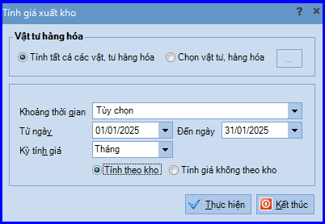
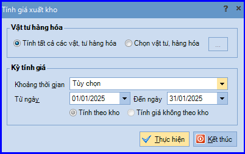
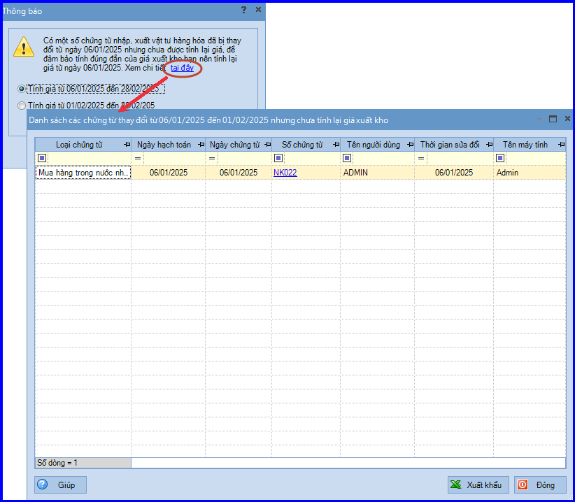

Hướng dẫn cách thực hiện tính đơn giá xuất kho trên phần mềm Misa
Phần mềm Misa cho phép thực hiện tính giá xuất kho hàng hóa vật tư, cập nhật giá xuất kho vào các phiếu xuất kho trong kỳ
Các bước thực hiện tính đơn giá xuất kho trên phần mềm Misa như sau:
- Trước tiên: Các bạn vào phân hệ "Kho" => Rồi chọn chức năng "Tính giá xuất kho" bên thanh tác nghiệp.
- Sau đó: Tùy vào từng phương pháp tính đơn giá xuất kho mà doanh nghiệp đã lựa chọn áp dụng để thực hiện như sau:
1. Phương pháp bình quân cuối kỳ.

- Đối với phương pháp bình quân cuối kỳ, cần lựa chọn tính giá theo kho hay không theo kho. Nếu tính giá theo kho thì giá của từng vật tư sẽ được tính bình quân trên từng kho, nếu tính giá không theo kho thì giá của từng vật tư sẽ được tính bình quân trên tất cả các kho.
- Đối với dữ liệu đa chi nhánh, giá của từng vật tư sẽ được tính chung cho tất cả các chi nhánh phụ thuộc.
2. Phương pháp bình quân tức thời.

- Đối với phương pháp bình quân tức thời, khi ghi sổ từng chứng từ xuất kho, chương trình luôn cập nhật giá xuất cho phiếu xuất đó. Tuy nhiên, trong quá trình làm việc, có thể phát sinh sửa hoặc chèn thêm chứng từ ở trước các phiếu xuất đã được tính giá, khi đó cần phải thực hiện tính giá xuất kho để tính lại giá cho các phiếu xuất phía sau.
- Tùy chọn Tính theo kho hoặc Tính giá không theo kho sẽ được tích tự động theo thiết lập ở menu "Hệ thống" => "Tùy chọn" => "Vật tư hàng hóa".
- Đối với dữ liệu đa chi nhánh, giá của từng vật tư sẽ được tính độc lập theo từng kho và từng chi nhánh.
3. Phương pháp nhập trước xuất trước.
- Đối với phương pháp nhập trước xuất trước, khi ghi sổ từng chứng từ xuất kho, chương trình luôn cập nhật giá xuất cho phiếu xuất đó. Tuy nhiên, trong quá trình làm việc, có thể phát sinh sửa hoặc chèn thêm chứng từ ở trước các phiếu xuất đã được tính giá, khi đó cần phải thực hiện tính giá xuất kho để tính lại giá cho các phiếu xuất phía sau.
- Đối với dữ liệu đa chi nhánh: giá của từng vật tư sẽ được tính độc lập theo từng kho và từng chi nhánh.
4. Phương pháp đích danh
- Đối với phương pháp đích danh, khi ghi sổ từng chứng từ xuất kho, chương trình luôn cập nhật giá xuất cho phiếu xuất đó. Tuy nhiên, trong quá trình làm việc có thể phát sinh lỗi nên cần thực hiện tính giá xuất kho để đảm bảo tính đúng đắn của giá xuất.
5. CHÚ Ý: Với phương pháp tính giá bình quân tức thời, nhập trước xuất trước
- Khi tính lại giá xuất kho, chương trình sẽ tự động chỉ ra các chứng từ thay đổi so với lần tính giá trước có khả năng ảnh hưởng đến giá xuất kho cần phải thực hiện tính lại giá để đảm bảo đúng đắn

- Khi tính lại giá xuất kho, chương trình sẽ cập nhật lại đơn giá nhập kho cho các phiếu nhập kho hàng bán trả lại (trường hợp đơn giá nhập kho chọn Lấy từ giá xuất kho)
- Khi tính lại giá cho các chứng từ nhập kho lắp ráp, tháo dỡ (trường hợp lắp ráp nhiều vòng), nếu có thay đổi giá thì chỉ phải tính lại giá xuất kho 1 lần. Còn với trường hợp chứng từ xuất kho linh kiện và chứng từ lắp ráp thành phẩm phát sinh vào 2 tháng khác nhau thì phải tính lại giá cho cả 2 tháng này.
- Thay đổi cách tính giá cho vật tư hàng hoá có nhiều đơn vị tính, thì
- Giá vốn = Số lượng x Đơn giá vốn.
- Thay đổi cách tính giá trong trường hợp đổi tính giá từ theo kho sang không theo kho (hoặc ngược lại): nếu trước đó không phát sinh chứng từ nhập kho, thì
- Đơn giá xuất = Giá trị tồn / Số lượng tồn
KẾ TOÁN DIỆU TÂM chúc các bạn làm tốt!
=============================
Nếu bạn muốn thành thạo các kỹ năng làm kế toán trên phần mềm Misa
Thì bạn có thể tham khảo "Khóa Học Thực Hành Kế Toán Trên Phần Mềm Misa" tại Công ty đào tạo Kế Toán Diệu Tâm
Trong khóa học này, bạn sẽ được dạy cách lên sổ sách, lập báo cáo tài chính trên phần mềm Misa
Chi tiết về chương trình đào tạo bạn xem tại đây nhé: Khóa học thực hành kế toán trên Misa
=============================
=============================
Nếu bạn muốn thành thạo các kỹ năng làm kế toán trên phần mềm Misa
Thì bạn có thể tham khảo "Khóa Học Thực Hành Kế Toán Trên Phần Mềm Misa" tại Công ty đào tạo Kế Toán Diệu Tâm
Trong khóa học này, bạn sẽ được dạy cách lên sổ sách, lập báo cáo tài chính trên phần mềm Misa
Chi tiết về chương trình đào tạo bạn xem tại đây nhé: Khóa học thực hành kế toán trên Misa
=============================